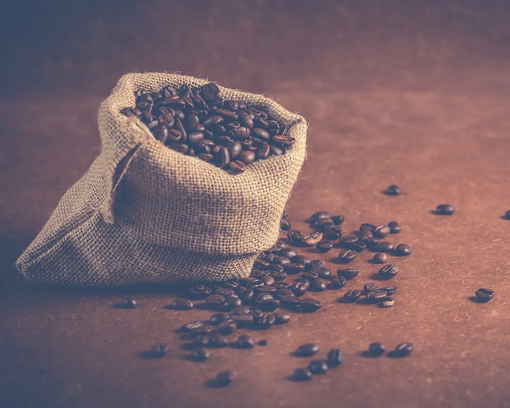

品牌理念
face「覺醒時刻，精彩即刻！」
覺醒表達早晨活力覺醒的感覺，讓人開始一天的充沛動力。 WakeRush，讓人瞬間有活力的感覺，咖啡的提神效果與年輕朝氣。
各種咖啡沖泡方法的圖像
face對咖啡的熱愛是一種生活態度
包括手沖、法式壓濾壺、摩卡壺、濃縮咖啡機和冷萃咖啡的具體設置，讓您更直觀了解每種方法的特點與工具配置！

咖啡作為日常的儀式感
face每一杯咖啡都像是一個小小的儀式
從選豆、磨豆到萃取，每一個過程都充滿了手作的溫度與專注。這種過程幫助人們在忙碌的生活中找到片刻寧靜，讓人享受專屬於自己的「慢時間」。
對咖啡的熱愛
face是一種生活態度
咖啡代表的不只是提神的飲品，更是一種專注於細節、熱愛生活、追求美好的態度。愛咖啡的人常常是熱愛探索與分享的人，因為他們在每一杯咖啡中，都能發現生活中不經意的美好瞬間。 咖啡文化讓人們超越地域和語言的界限，用香氣和味道搭建了一座通往彼此心靈的橋樑。對咖啡的熱愛，是對生活的熱愛，是對連結與創造的無限追求。